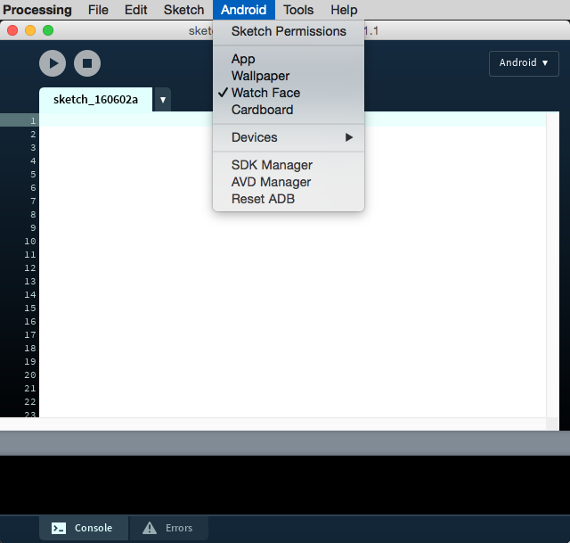
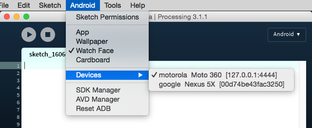

Use the Android Mode to develop interactive watch faces
Android smartwatches allow you to install custom watch faces that display time in original ways that make use of the affordances of the digital clock, and you could also interact with. Developing watch faces require some special consideration, due to the limitations of the device in terms of screen size, and battery life. Google has published some guidelines for watch face design.
First of all, developing for a smartwatch requires to pair the device with a phone that will function as a bridge between the computer you are runnig Processing on, and the watch. To do so, you have to setup the devices for debugging over Bluetooth, which is explained here. Once you have done this, you can select the Watch Face option in the Android menu:
After setting up BT debugging and selecting the Watch Face option in Processing, you should see your smartwach in the device list:
As a very simple first attempt at creating a watch face, let's just display the time using text. The structure of the sketch is very straightfoward:
void setup() { fullScreen(); frameRate(1); textFont(createFont("Roboto", 48)); fill(255); } void draw() { background(0); translate(0, +insetBottom/2); if (!ambientMode) { String str = hour() + " " + minute() + " " + second(); float w = textWidth(str); text(str, (width - w)/2, height/2 + 24); } }
A couple of things to observe in this sketch is the use of a frame rate of 1 because the text only changes 1 every second, so it does not make sense to update the frame any faster. Also we use the insetBottom built-in variable to account for watches that have a chin in the bottom of the screen, like the Moto 360. This variable will be zero otherwise.
You can use the time values to generate shapes that change as hours, minutes, and seconds go by. Tap events can also be captured with the mousePressed function and the mouseX/mouseY built-in variables:
ArrayListpos; void setup() { fullScreen(); frameRate(1); pos = new ArrayList (); } void draw() { int time = hour() * 60 + minute(); if (time == 0) pos.clear(); float x = map(time, 0, 24 * 60, 0, width); if (ambientMode) { background(0); noFill(); stroke(255); line(x, 0, x, height); for (PVector p: pos) { ellipse(p.x, p.y, 10, 10); } } else { background(255); fill(0); noStroke(); rect(0, 0, x, height); for (PVector p: pos) { if (p.x < x) { fill(255); } else { fill(0); } ellipse(p.x, p.y, 10, 10); } } } void mousePressed() { pos.add(new PVector(mouseX, mouseY)); }